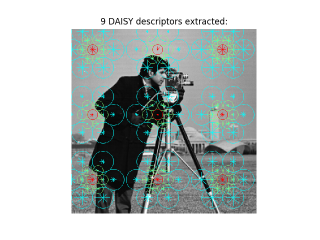

Source
SourceNote
Click here to download the full example code
Dense DAISY feature description¶
The DAISY local image descriptor is based on gradient orientation histograms similar to the SIFT descriptor. It is formulated in a way that allows for fast dense extraction which is useful for e.g. bag-of-features image representations.
In this example a limited number of DAISY descriptors are extracted at a large scale for illustrative purposes.
from skimage.feature import daisy
from skimage import data
import matplotlib.pyplot as plt
img = data.camera()
descs, descs_img = daisy(img, step=180, radius=58, rings=2, histograms=6,
orientations=8, visualize=True)
fig, ax = plt.subplots()
ax.axis('off')
ax.imshow(descs_img)
descs_num = descs.shape[0] * descs.shape[1]
ax.set_title('%i DAISY descriptors extracted:' % descs_num)
plt.show()
Total running time of the script: ( 0 minutes 1.782 seconds)